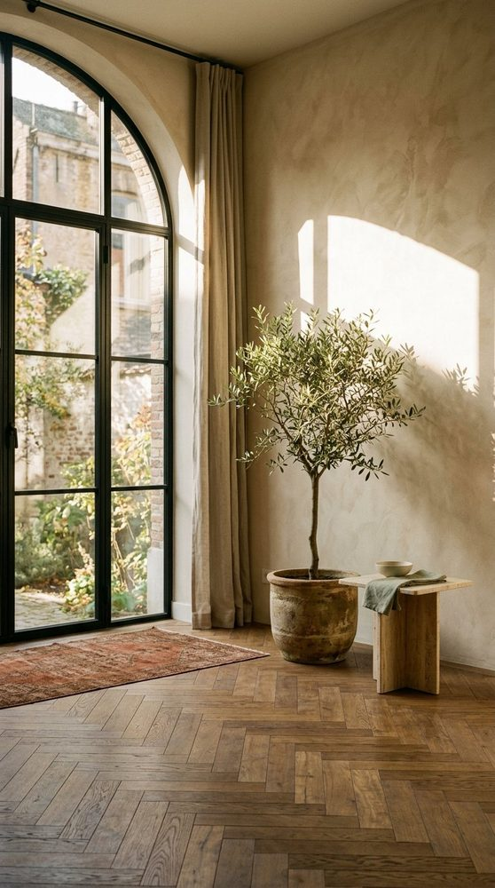
01 / 2025
Nilaya House
An apartment re-drawn around a single arched opening. Three walls removed, one arch kept.
Interior Architecture · Objects · Est. 2014
Pune · Bengaluru · Milan
i.
Bare plaster. One arched window. The room breathes before anything is placed inside it.
ii.
Proportion, shadow, the path of the north light. Every decision is drawn from the room itself.
Bouclé, travertine, oak underfoot. A rust rug that holds the afternoon. Calm, made deliberate.
01 · The Studio
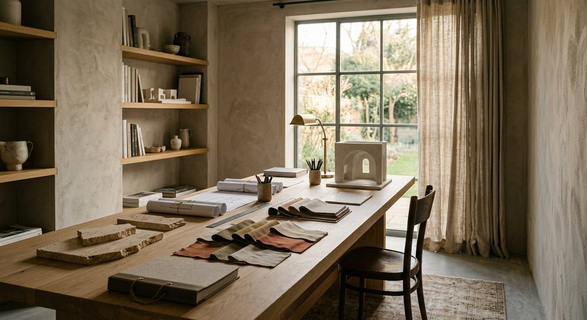
Maison Arc is a small studio of architects and material people. We take on a handful of homes each year, never more than six, so that every arch, joint and shadow gets the attention it asks for.
We work in limewash, oak, travertine and clay: surfaces that age with the people living on them. Nothing shouts. Everything holds.
Beige ground, green turf — the studio reads land the way it reads light.
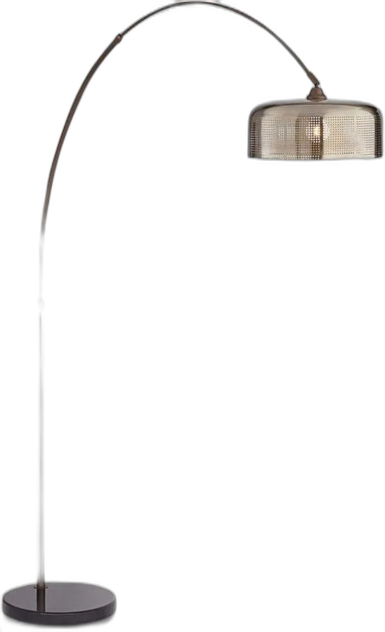
02 · Selected Work
Each project begins with a demolition drawing and ends with a rug. Drag sideways through the archive — every room was photographed on the day we left it.

01 / 2025
An apartment re-drawn around a single arched opening. Three walls removed, one arch kept.
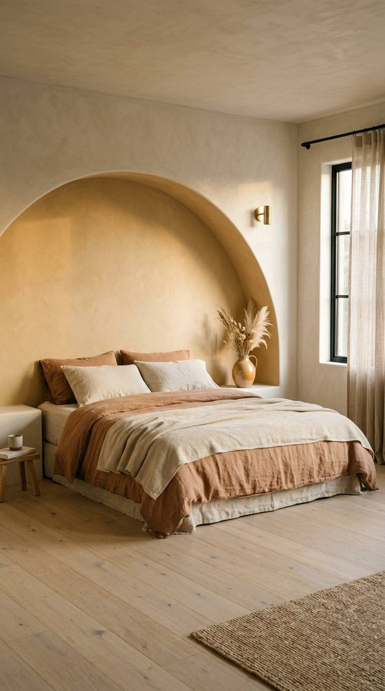
02 / 2024
A rented flat that could not be touched — so we built a curved plaster room inside it.
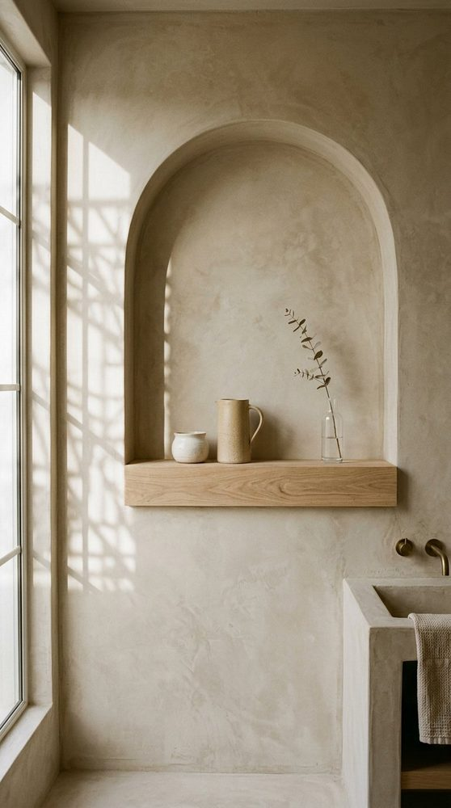
03 / 2024
One long bench of stone, handles removed, lines closed. A bathroom that behaves like a wall.
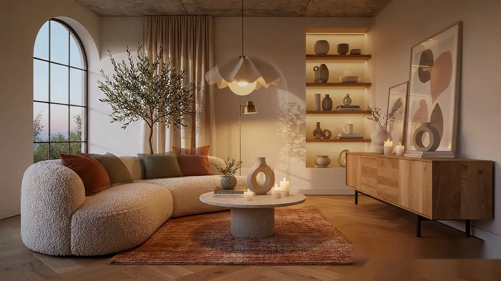
04 / 2023
Shelving as architecture. One niche for the things worth keeping, lit from within.
Drag, scroll or use the arrows — 01 / 04
Four rooms, four silences — each one read as a field before it was drawn.
03 · The Object Library
A living index of the furniture, lighting and greenery we specify again and again. Hover a piece to pull it forward.
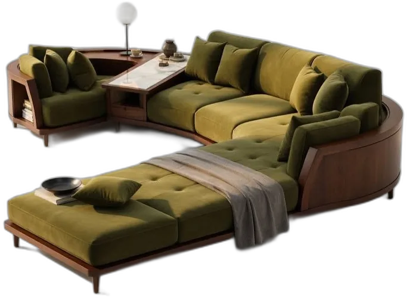
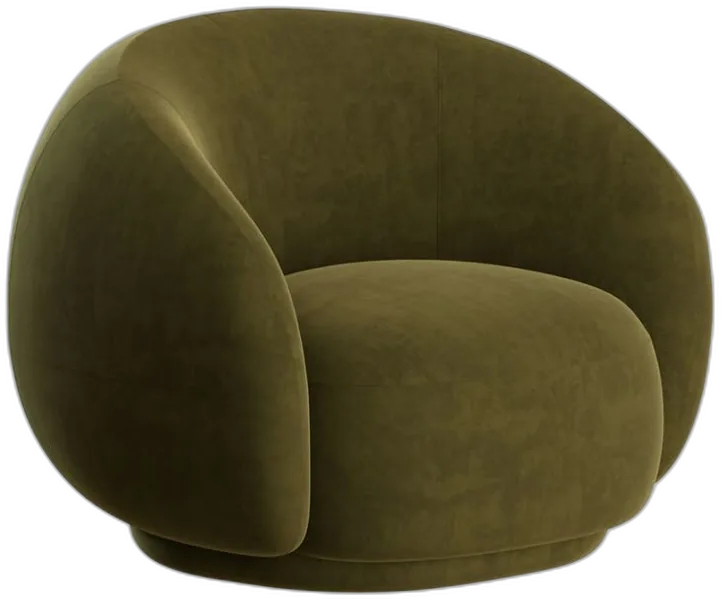
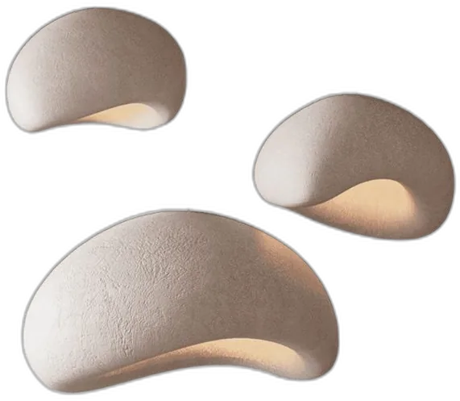
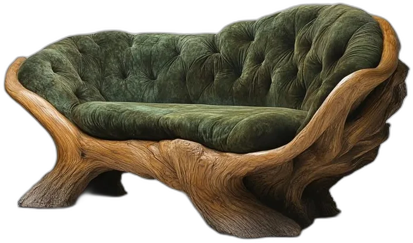
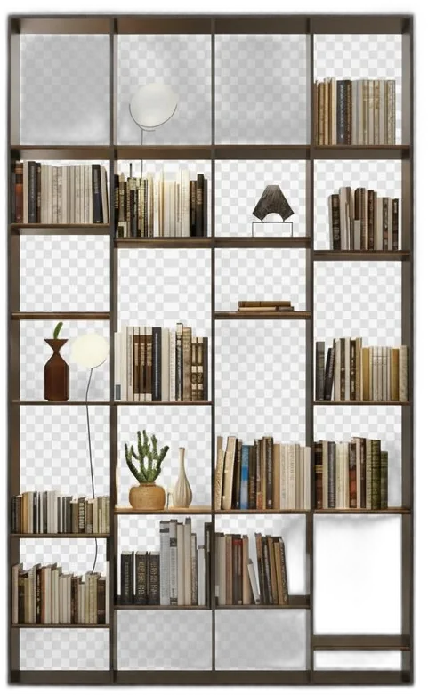
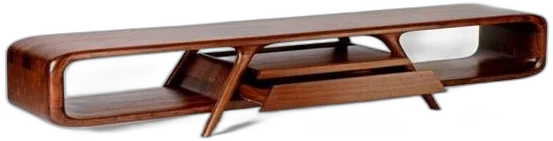
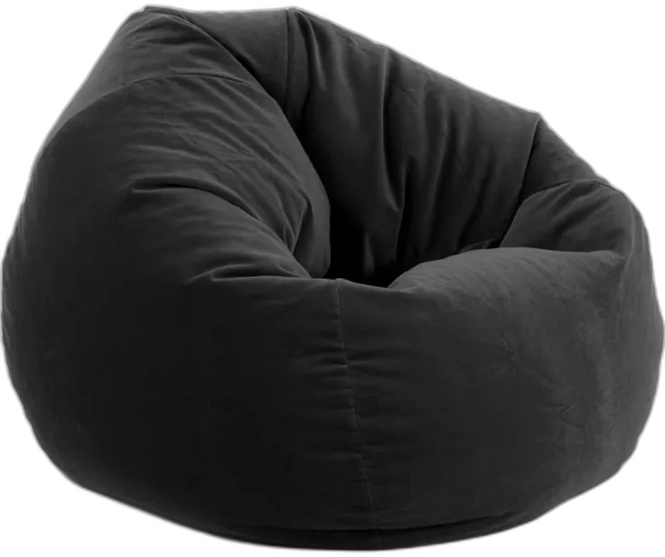
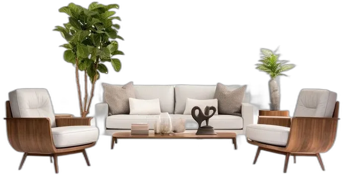
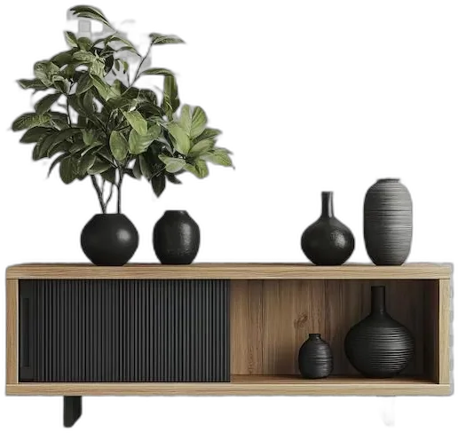
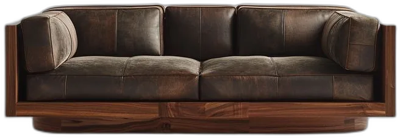
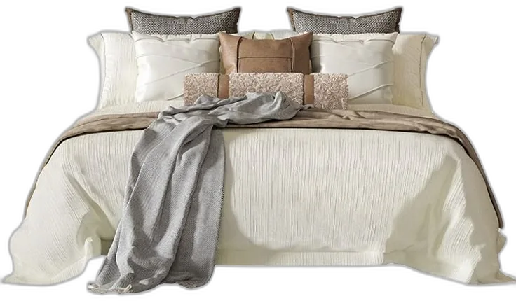
Every piece is sourced, not sponsored. Ask us for the maker list — request the lookbook.
04 · Approach
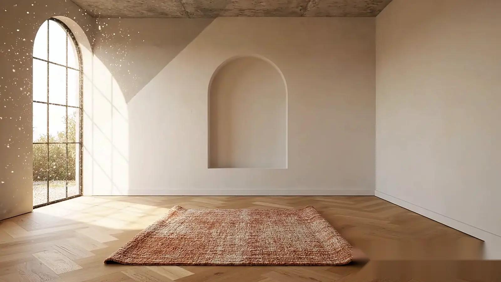
Frame 41 — the room, mid-sentence.
The grid, kept honest — measured once, cut never twice.
Walls moved, arches drawn, joinery built into the structure. We work from drawings and site, never from a mood board alone.
Before a single piece is specified, we model the light. Where it lands at 9 a.m., and where it dies at 6, decides the plan.
Benches, shelves, headboards and handles drawn for one room only, made with four workshops we have used for a decade.
Fewer things, better placed. We source ceramics, textiles and works on paper from studios we visit ourselves.
05 · Process
Four steps,
twelve to twenty weeks.
No retainer before step two. No drawings before we have stood in the room.
Two hours in your home, no drawings. We photograph the light at three different hours and record how you actually use the rooms, not how you mean to.
A plan, an axonometric, a palette of twelve materials on your own floor. One round of revisions, free. The second is where the money is.
Site supervision, joinery shop visits, and a running list of everything we rejected. We show up on the dusty days, not just the pretty ones.
We style the rooms, photograph them, then step out. A good interior should still work when the designer stops visiting.
Strata — earth, plaster and turf beneath every finish.
They didn't fill our house. They gave it a pulse — and then they left us alone with it.
Ananya & Rugved M. — Nilaya House, Pune
06 · Journal
Notes from the site — what the land remembers.
14 Nov 2026 · Material
Limewash moves. It holds the hour of the day in its surface, and it forgives a house that gets lived in.
Read the note02 Oct 2026 · Detail
Four hundred millimetres of depth costs less than a shelf and gives the room a place to keep its silence.
Read the note19 Sep 2026 · Objects
What we leave out is the design. A list of the pieces that survived our most ruthless edit.
Read the note